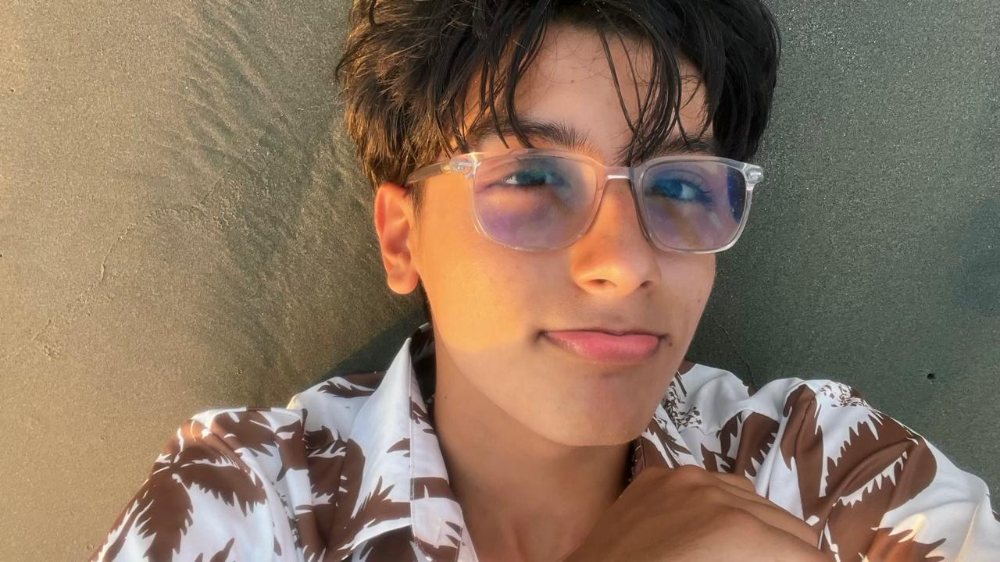

Artes
Donde mi creatividad se expresa sin reglas.
Hola, soy
Estudiante, soñador y futuro universitario
Soy una persona curiosa, soñadora y creativa. Me apasionan la gastronomía y la danza, me gusta cuestionar las cosas y valoro la autenticidad y la libertad.

🎨 Artes 🎮 Videojuegos 💃 DanzaMis intereses
Donde mi creatividad se expresa sin reglas.
Mi forma de expresar lo que no se decir con palabras.
Mundos para explorar, jugar y desconectar.
No me aburro de escuchar música todos mis días.
Siempre hay algo nuevo por descubrir :).
Aspiraciones y forma de ser
Gastronomía y Danza
Me atrae la creatividad de transformar ingredientes en algo único, y me apasiona la danza como forma de expresarme. También me interesan las artes.
Valoro la autenticidad y la libertad.
Juanda